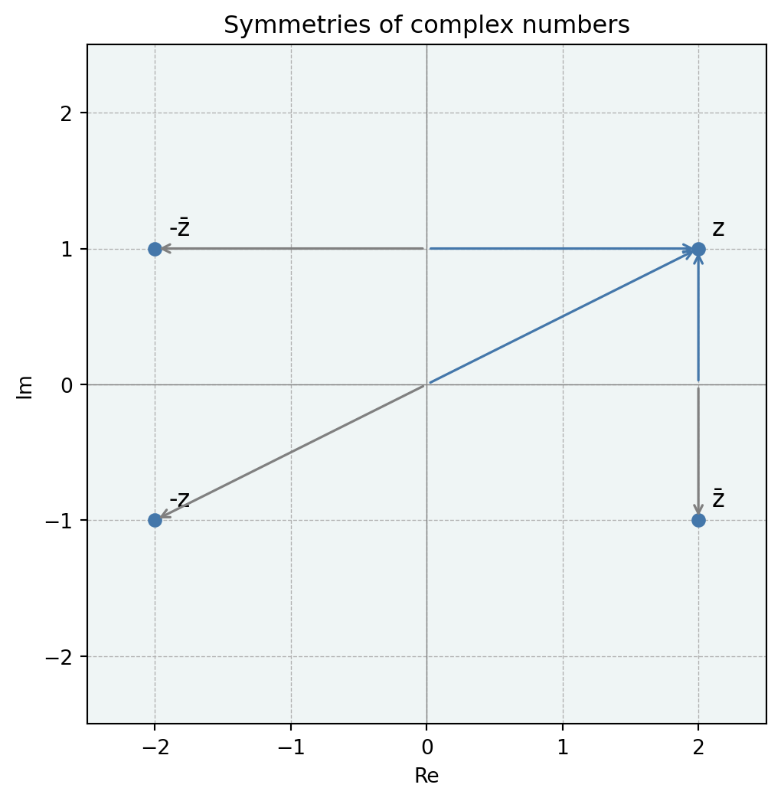
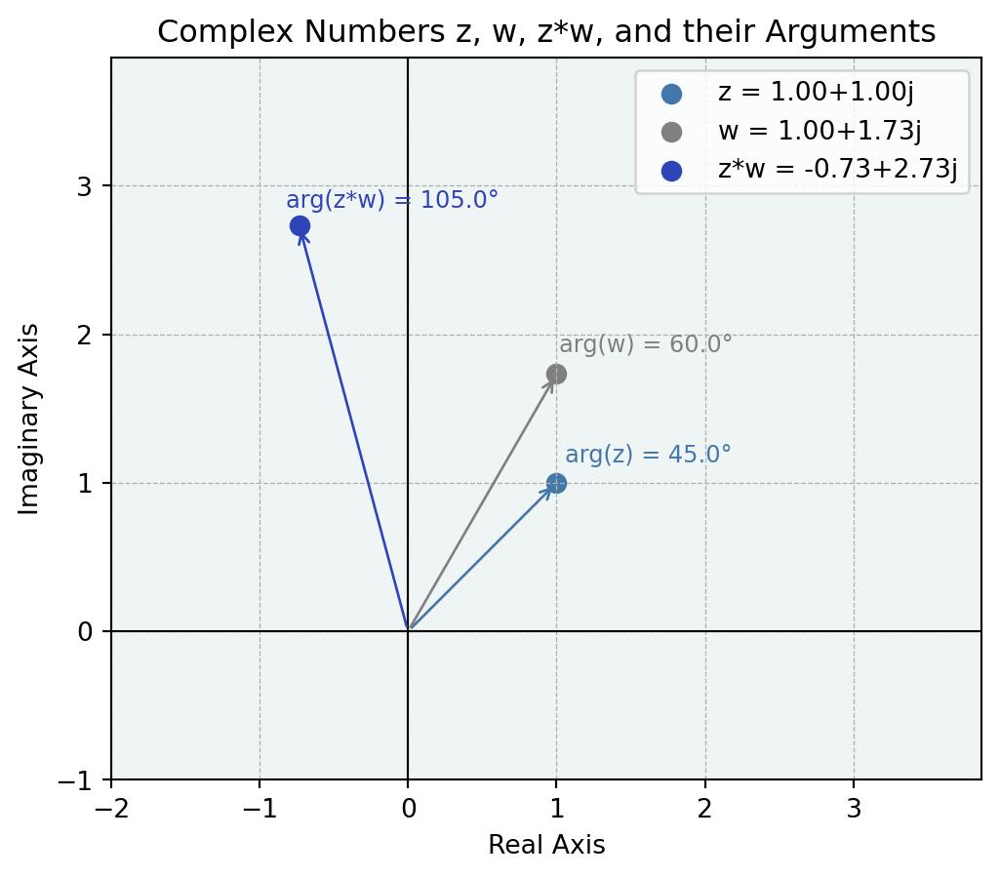
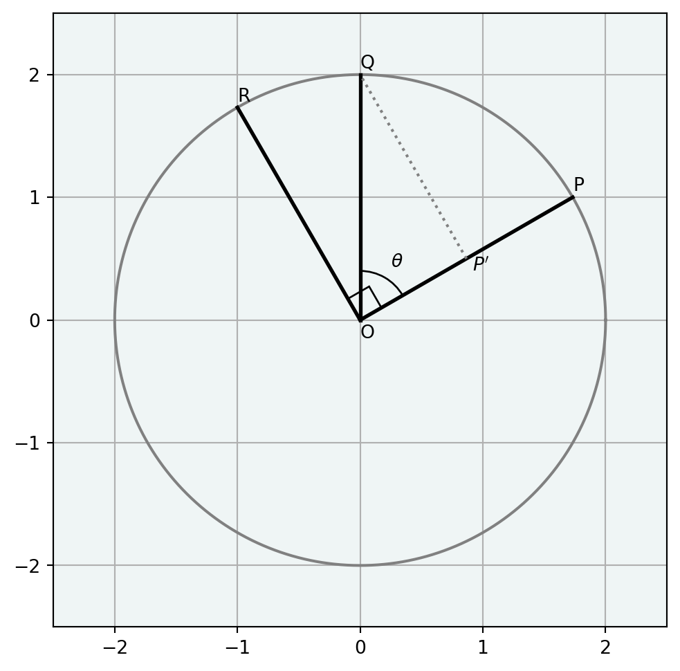
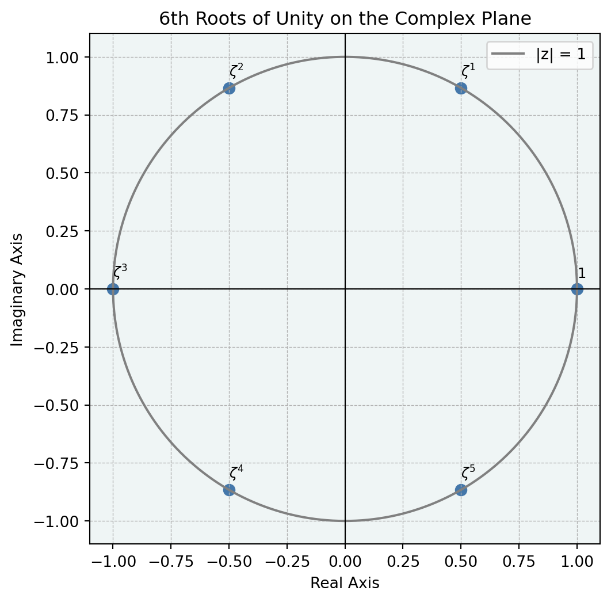

Key takeways
\(z_1, z_2\in \mathbb C\) のとき，
\[ \begin{align} z_1 &= r_1(\cos\theta_1 + i\sin\theta_1)\\ z_2 &= r_2(\cos\theta_2 + i\sin\theta_2) \end{align} \]
とすると，以下が成立する
\[ \begin{align} &z_1z_2 = r_1r_2(\cos(\theta_1 + \theta_2) + i\sin(\theta_1 + \theta_2))\\ &|z_1z_2| = |z_1||z_2|\\ &\operatorname{arg}(z_1z_2) = \operatorname{arg}(z_1) + \operatorname{arg}(z_2)\\ &\frac{z_1}{z_2} = r_1r_2(\cos(\theta_1 - \theta_2) + i\sin(\theta_1 - \theta_2))\\ &\left|\frac{z_1}{z_2}\right| = \frac{|z_1|}{|z_2|}\\ &\operatorname{arg}\left(\frac{z_1}{z_2}\right) = \operatorname{arg}(z_1) - \operatorname{arg}(z_2) \end{align} \]
複素数の性質
Def: 複素数と 0
複素数 \(z = a + bi = 0\) のとき，\(a = b = 0\) である．
この定義より，複素数 \(z\) の絶対値 \(\vert z \vert = 0\) であるならば，
\[ \begin{align} \vert z \vert = 0 \Leftrightarrow (a^2 + b^2) = 0 \Leftrightarrow a = b = 0 \Leftrightarrow z = 0 \end{align} \]
であることがわかります．
Def: 共役複素数
複素数 \(z = a + bi\) に対して，\(a - bi\) を \(z\) の共役複素数と呼び，\(\overline z\) と表す．
足すと 5 になり，掛けると 7 になる２つの数を考えてみたいと思います．それぞれの数を \(\alpha, \beta\) とすると解と係数の関係より
\[ x^2 - 5x + 7 =0 \]
という二次方程式の解を求めることで求まります．これをといてみると
\[ \alpha, \beta = \frac{5 \pm \sqrt{25 - 28}}{2} = \frac{5 \pm \sqrt{3}i}{2} \]
という複素解がでてきます．また，共役複素数の定義より
\[ \overline \alpha = \beta \]
であることがわかります．また，もともとの問題が２つの和が \(5\), 積が \(7\) を満たす数を求める問題であったとことから
\[ \begin{gather} \alpha + \overline\alpha = 5\\ \alpha \overline\alpha = 7 \end{gather} \]
となりますが，このように共役複素数は積と和が実数になるという特徴が有ります．
Theorem 1
複素数 \(z = a + bi\) について，
\[ z\overline z = a^2 + b^2 \]
が成り立つ．
複素数 \(z = a + bi\) について，\(z\overline{z} = 1\) となるような複素数 \(\overline{z}\) を（乗法）逆元と呼ぶとき，
\[ \frac{z\overline{z}}{a^2 + b^2} = 1 \]
となることから，\(\displaystyle \frac{\overline{z}}{\vert z \vert^2} = \frac{\overline{z}}{z\overline{z}} = \frac{a - bi}{a^2 + b^2}\) が逆源となることがわかります．
Theorem 2 : 共役複素数
２つの複素数 \(z, w\) に対して，
\[ \begin{gather} \overline{z + w} = \overline{z} + \overline{w} \label{#eq-complex-1}\\ \overline{z w} = \overline{z}\,\overline{w} \label{#eq-complex-2} \end{gather} \]
が成り立つ．
複素平面
複素数 \(z = a + bi\) は実部と虚部に着目すると２つの実数の組 \((a, b)\) と1:1対応していることがわかります．一方，２つの実数の組 \((a, b)\) を与えるということは 実数平面空間の１点と対応することと同じなので，平面上の点全体と複素数の全体は１対１に対応するということがわかります．
この対応によって，平面が複素数全体であると考えたものを複素平面またはガウス平面と呼びます．複素平面においては，\(x\) 軸を実軸，\(y\) 軸を虚軸といいます．
極形式の導入
複素平面において，複素数 \(z = a + bi\) の位置ベクトル \(\overrightarrow{OZ}\) について
- \(r\): \(||\overrightarrow{OZ}||\)
- \(\theta\) : ベクトル \(\overrightarrow{OZ}\) が実軸となす角
と極座標に対応させて考えると，\(r = |z|\) となりますし，また偏角についても
\[ \theta = \operatorname{arg} z \]
と表します．ここから複素数について次のような表し方を得ます
\[ z = r(\cos\theta + i\sin\theta) \]
これを \(z\) の極形式といいます．
📘 REMARKS
複素数 \(z = a + bi\) について，複素平面上では
- \(-z = -a - bi\): 原点に関する対称移動
- \(\overline{z} = a - bi\): 実軸に関する対称移動
- \(-\overline{z} = -a + bi\): 虚軸に関する対称移動
Code
import matplotlib.pyplot as plt
# 複素数の定義（例として z = 2 + 1i）
a, b = 2, 1
z = complex(a, b)
# 各変換
minus_z = -z # -z
conj_z = z.conjugate() # z̄
minus_conj_z = -conj_z # -z̄
# 複素数の点とラベル
points = {
"z": z,
"-z": minus_z,
"z̄": conj_z,
"-z̄": minus_conj_z
}
# プロット
fig, ax = plt.subplots(figsize=(6,6))
ax.set_facecolor("#EFF5F5")
for label, point in points.items():
ax.plot(point.real, point.imag, 'o', c="#4477AA")
ax.text(point.real + 0.1, point.imag + 0.1, label, fontsize=12)
def draw_arrow(from_point, to_point, color):
ax.annotate("",
xy=(to_point.real, to_point.imag),
xytext=(from_point.real, from_point.imag),
arrowprops=dict(arrowstyle="->", color=color, lw=1.2))
draw_arrow(0, z, "#4477AA")
draw_arrow(complex(0, z.imag), z, "#4477AA")
draw_arrow(complex(0, z.imag), minus_conj_z, "gray")
draw_arrow(0, minus_z, "gray") # z → -z
draw_arrow(complex(z.real, 0), conj_z, "gray")
draw_arrow(complex(z.real, 0), z, "#4477AA")
# 軸設定
ax.set_xlim(-2.5, 2.5)
ax.set_ylim(-2.5, 2.5)
ax.axhline(0, color='gray', linewidth=0.5)
ax.axvline(0, color='gray', linewidth=0.5)
ax.set_xlabel('Re')
ax.set_ylabel('Im')
ax.set_title('Symmetries of complex numbers')
ax.grid(True, which="both", linestyle="--", linewidth=0.5)
ax.set_aspect("equal", adjustable="box") # Make axes equal scale
plt.show()複素数の積と回転
２つの複素数 \(z, w\) の積を考えます．
\[ \begin{align} \vert z \vert = r_1, \quad & \operatorname{arg}z = \theta_1\\ \vert w \vert = r_2, \quad & \operatorname{arg}w = \theta_2 \end{align} \]
とおくと，加法定理を用いて以下のように展開できます
\[ \begin{align} zw &= r_1(\cos\theta_1 + i \sin\theta_1)r_2(\cos\theta_2 + i \sin\theta_2)\\ &= r_1r_2\{(\cos\theta_1\cos\theta_2 - \sin\theta_1\sin\theta_1) + i(\cos\theta_1\sin\theta_2 + \cos\theta_2\sin\theta_1)\}\\ &= r_1r_2(\cos(\theta_1 + \theta_2) + i\sin(\theta_1 + \theta_2)) \end{align} \]
ここから以下のことがわかります
\[ \begin{gather} \vert zw \vert = \vert z\vert\, \vert w \vert\\ \operatorname{arg} zw \equiv \operatorname{arg} z + \operatorname{arg} w \quad(\operatorname{mod} 2\pi) \end{gather} \]
積 \(zw\) の位置ベクトルは，\(z\) の位置ベクトルを \(\vert w \vert\) 倍に拡大し，原点 \(O\) のまわりに角 \(\operatorname{arg} w\) だけ回転させたものであると解釈できます．
Code
import matplotlib.pyplot as plt
import numpy as np
# --- Define your complex numbers here ---
z = 1 + 1j
w = complex(1, np.sqrt(3))
# ----------------------------------------
## Calculate the product
product = z * w
# Points and labels for scattering (Origin + z, w, product)
nums_to_label = {"z": z, "w": w, "z*w": product}
points = list(nums_to_label.values())
real_parts = [p.real for p in points]
imag_parts = [p.imag for p in points]
scatter_labels = [f"{name} = {num:.2f}" for name, num in nums_to_label.items()]
# Create the plot
fig, ax = plt.subplots(figsize=(6, 6))
ax.set_facecolor("#EFF5F5")
# Scatter plot for the points
colors = ["#4477AA", "gray", "#2E45B8"] # Origin, z, w, product
markers = ["o", "o", "o"]
for i in range(len(points)):
ax.scatter(
real_parts[i],
imag_parts[i],
color=colors[i],
marker=markers[i],
s=50,
label=scatter_labels[i],
)
# Add arrows from origin
ax.annotate(
"",
xy=(real_parts[i], imag_parts[i]),
xytext=(0, 0),
arrowprops=dict(arrowstyle="->", color=colors[i]),
)
# Add argument text annotations
text_offset = 0.15 # Small offset for text position, adjust as needed
for name, num in nums_to_label.items():
# Calculate argument in degrees
arg_rad = np.angle(num)
arg_deg = np.degrees(arg_rad)
# Create text label
text_label = f"arg({name}) = {arg_deg:.1f}°" # Format to 1 decimal place
# Position the text slightly offset from the point
# You might need to fine-tune text_x, text_y for better placement
text_x = num.real + text_offset * np.cos(
arg_rad + np.pi / 8
) # Offset slightly outwards
text_y = num.imag + text_offset * np.sin(arg_rad + np.pi / 8)
ax.text(
text_x,
text_y,
text_label,
fontsize=9,
color=colors[list(nums_to_label.keys()).index(name)],
) # Use point's color
# --- Plot Styling ---
# Set plot limits to ensure all points and text are visible
max_abs_val = max(abs(p) for p in points[1:]) if len(points) > 1 else 1
padding = max_abs_val * 0.4 # Add padding based on magnitude
ax.set_xlim(min(real_parts) - padding, max(real_parts) + padding)
ax.set_ylim(min(imag_parts) - padding, max(imag_parts) + padding)
# Determine symmetric limits centered at 0
lim = max(abs(l) for l in ax.get_xlim() + ax.get_ylim())
ax.set_xlim(-2, lim)
ax.set_ylim(-1, lim)
# Add grid, labels, and title
ax.grid(True, which="both", linestyle="--", linewidth=0.5)
ax.axhline(y=0, color="k", linewidth=0.8)
ax.axvline(x=0, color="k", linewidth=0.8)
ax.set_xlabel("Real Axis")
ax.set_ylabel("Imaginary Axis")
ax.set_title("Complex Numbers z, w, z*w, and their Arguments")
ax.set_aspect("equal", adjustable="box") # Make axes equal scale
ax.legend()
# Show the plot
plt.show()
▶ 加法定理を用いずに回転を理解する
ここでは加法定理を用いずに大きさが1の複素数 \(\cos\theta + i\sin\theta\) を掛ける操作が複素平面上の \(\theta\) 回転を表すことを確認します．
\[ \begin{gather} z = a + ib\\ w = \cos\theta + i\sin\theta \end{gather} \]
の２つの複素数の積は
\[ \begin{align} zw &= (a + ib)(\cos\theta + i\sin\theta)\\ &= (a\cos\theta - b\sin\theta) + i(a\sin\theta + b\cos\theta ) \end{align} \]
以下の図では \(z = a + ib\) として
- 複素数 \(z\) と対応する点２次元実数空間に表した点を \(P =(a, b)\)
- \(P\) を \(\theta\) 回転させた点を \(Q\)
- \(P\) を \(90^\prime\) 回転させた点を \(R = (-b, a)\)
- \(\overrightarrow{OQ}\) を \(\overrightarrow{OP}\) に正射影したベクトルを \(\overrightarrow{OP^\prime}\)
としています．ベクトルの正射影の考え方より
\[ \begin{align} \overrightarrow{OP^\prime} = \vert OQ \vert \cos\theta \frac{\overrightarrow{OP}}{\vert OP\vert} = \cos\theta \overrightarrow{OP}\\ \overrightarrow{P^\prime Q} = \vert OQ \vert \sin\theta \frac{\overrightarrow{OR}}{\vert OR\vert} = \sin\theta \overrightarrow{OR} \end{align} \]
従って，
\[ \begin{align} \overrightarrow{OQ} &= \overrightarrow{OP^\prime} + \overrightarrow{P^\prime Q}\\ &= \cos\theta \overrightarrow{OP} + \sin\theta \overrightarrow{OR} \end{align} \]
ここで，成分を考えると
\[ \overrightarrow{OQ} = (a\cos\theta - b\sin\theta, a\sin\theta + b\cos\theta) \]
これは複素数 \((a\cos\theta - b\sin\theta) + i(a\sin\theta + b\cos\theta )\) に対応しているので，複素数の積 \(zw\) は \(z\) を \(\operatorname{arg} w\) だけ回転させた複素平面の点に対応することがわかりました．
Code
import matplotlib.patches as patches
import cmath
fig, ax = plt.subplots(figsize=(6, 6))
ax.set_facecolor("#EFF5F5")
# Circle parameters
r = 2 # radius
theta = np.linspace(0, 2 * np.pi, 500)
circle = r * np.exp(1j * theta)
ax.plot(circle.real, circle.imag, label=f"|z| = {r}", color="gray")
## define points
OP = complex(np.sqrt(3), 1)
OR = OP * 1j
O = complex(0, 0)
OQ = complex(np.cos(np.pi / 3), np.sin(np.pi / 3)) * OP
OP_2 = np.cos(np.pi / 3) * OP
## plots
points = [OP, OR, OQ]
scatter_labels = ["P", "R", "Q"]
ax.text(
0,
-0.15,
"O",
fontsize=10,
color="black",
)
# 直交する2本の線を描画
for i in range(len(points)):
point = points[i]
ax.plot([0, point.real], [0, point.imag], "k", linewidth=2) # OP
ax.text(
point.real,
point.imag + 0.05,
scatter_labels[i],
fontsize=10,
color="black",
)
## ad P'Q
ax.plot([OP_2.real, OQ.real], [OP_2.imag, OQ.imag], color="gray", linestyle="dotted")
ax.text(
OP_2.real + 0.05,
OP_2.imag * 0.8,
r"$P^\prime$",
fontsize=10,
color="black",
)
# 直角記号（小さな四角）を原点付近に描画
# 直角記号（原点から少しオフセット）
theta = cmath.phase(OP) # 60 degrees
orthogonal_theta = theta + np.pi / 2 # 90° 直交
offset = 0.0
# 直角マークの位置を作成（60°方向に少し移動 → 90°方向に正方形を描く）
base_x = offset * np.cos(theta)
base_y = offset * np.sin(theta)
rect_dx = 0.2 * np.cos(orthogonal_theta)
rect_dy = 0.2 * np.sin(orthogonal_theta)
# 小さな直角マーク（平行四辺形を回転して表現）
right_angle = patches.Polygon(
[
(base_x, base_y),
(base_x + rect_dx, base_y + rect_dy),
(
base_x + rect_dx + 0.2 * np.cos(theta),
base_y + rect_dy + 0.2 * np.sin(theta),
),
(base_x + 0.2 * np.cos(theta), base_y + 0.2 * np.sin(theta)),
],
closed=True,
edgecolor="black",
facecolor="none",
)
ax.add_patch(right_angle)
arc = patches.Arc(
(0, 0),
0.8,
0.8,
angle=np.degrees(cmath.phase(OP)), # start
theta1=0,
theta2=np.degrees(cmath.phase(OQ)) - np.degrees(cmath.phase(OP)),
color="black",
)
## add angle theta
theta_r = 0.5
ax.text(
theta_r * np.cos(np.mean([cmath.phase(OQ), cmath.phase(OP)])),
theta_r * np.sin(np.mean([cmath.phase(OQ), cmath.phase(OP)])),
r"$\theta$",
color="black",
fontsize=10,
)
ax.add_patch(arc)
# 軸設定
ax.set_xlim(-2.5, 2.5)
ax.set_ylim(-2.5, 2.5)
ax.set_aspect("equal")
ax.grid(True)
plt.show()
▶ 複素数の割り算
２つの複素数 \(z, w\) を上と同様に考えます． \(\vert w \vert \neq 0\) であるとき，
\[ \begin{align} \frac{1}{w} &= \frac{1}{r_2(\cos \theta_2 + i\sin\theta_2)}\\ &= \frac{1}{r_2}(\cos \theta_2 - i\sin\theta_2)\\ &= \frac{1}{r_2}(\cos (-\theta_2) + i\sin(-\theta_2))\\ \end{align} \]
であるので
\[ \begin{align} \frac{z}{w} &= \frac{r_1}{r_2}\{(\cos\theta_1\cos(-\theta_2) - \sin\theta_1\sin(-\theta_2)) + i(\cos\theta_1\sin(-\theta_2 )+ \sin\theta_1\cos(-\theta_2))\}\\ &= \frac{r_1}{r_2}\{(\cos\theta_1\cos\theta_2 + \sin\theta_1\sin\theta_2) + i(-\cos\theta_1\sin\theta_2 + \sin\theta_1\cos\theta_2)\}\\ &= \frac{r_1}{r_2}(\cos(\theta_1 - \theta_2) + i (\sin\theta_1 - \theta_2)) \end{align} \]
したがって，
\[ \begin{gather} \bigg\vert \frac{z}{w} \bigg\vert = \frac{\vert z\vert}{\vert w \vert}\\ \operatorname{arg} \frac{z}{w} \equiv \operatorname{arg} z - \operatorname{arg} w \quad(\operatorname{mod} 2\pi) \end{gather} \]
Theorem 3 : ド・モアブルの公式
正の整数 \(n\) に対して，
\[ (\cos\theta + i\sin\theta)^n = \cos n\theta + i\sin n \theta \]
が成り立つ．
▶ 1の \(n\) 乗根を複素数の範囲で求める
\(n\) 乗すると \(a\) になる数を \(a\) の \(n\) 乗根といいます．ここで1の6乗根を求めてみたいと思います．
\(z^6 =1\) より \(\vert z \vert = 1\). つまり，
\[ z = \cos\theta + i \sin\theta \]
と表すことができます．ド・モアブルの公式より
\[ z^6 = \cos6\theta + i \sin6\theta = 1 \]
つまり，
\[ \begin{gather} 6\theta \equiv 0 \, \operatorname{mod} 2\pi \end{gather} \]
\(\displaystyle \zeta = \cos\frac{2\pi}{6} + i \sin \frac{2\pi}{6}\) とおくと，
\[ (1, \zeta, \zeta^2, \zeta^3, \zeta^4, \zeta^5) \]
が解となります．これをplotすると以下のよう単位円周を６等分した点になることがわかります．
Code
zeta = complex(np.cos(2 * np.pi / 6), np.sin(2 * np.pi / 6))
points = [zeta ** i for i in range(6)]
scatter_labels = [1] + [fr'$\zeta^{i}$' for i in range(1, 6)]
# Create the plot
fig, ax = plt.subplots(figsize=(6, 6))
ax.set_facecolor("#EFF5F5")
for i in range(len(points)):
ax.scatter(
points[i].real,
points[i].imag,
s=50,
color="#4477AA",
)
ax.text(
points[i].real,
points[i].imag+0.05,
scatter_labels[i],
fontsize=9,
color='black',
)
# Circle parameters
r = 1 # radius
theta = np.linspace(0, 2 * np.pi, 500)
circle = r * np.exp(1j * theta)
ax.plot(circle.real, circle.imag, label=f'|z| = {r}', color='gray')
# Add grids
ax.grid(True, which="both", linestyle="--", linewidth=0.5)
ax.axhline(y=0, color="k", linewidth=0.8)
ax.axvline(x=0, color="k", linewidth=0.8)
ax.set_xlabel("Real Axis")
ax.set_ylabel("Imaginary Axis")
ax.set_title("6th Roots of Unity on the Complex Plane")
ax.set_aspect("equal", adjustable="box") # Make axes equal scale
ax.legend()
# Show the plot
plt.show()
▶ \(\alpha \in \mathbb C\) の \(n\) 乗根
\(0\) 出ない一般の複素数 \(\alpha = r(\cos \theta + i\sin\theta)\) の \(n\) 乗根を求めます．
\[ z^n = r(\cos \theta + i\sin\theta) \]
であるためには，ド・モアブルの定理より次の条件を満たすのが必要十分となります．
\[ \begin{align} |z|^n &= r\\ n\operatorname{arg}(z) &= \theta + 2k\pi\quad(k = 0, 1, 2, 3, \cdots) \end{align} \]
重複を避けるために，\(k = 0, 1, \cdots, n-1\) とすると
\[ z_k = r^{1/n}\left\{\cos\left(\frac{\theta}{n} + \frac{2\pi}{n}\times k\right) + i\sin\left(\frac{\theta}{n} + \frac{2\pi}{n}\times k\right)\right\} \]
▶ 大きさが1の複素数とLie群
大きさが1の複素数の集合は，複素平面で考えると大きさが1の円周になります．この集合を
\[ S = \{z \in \mathbb C | \vert z\vert = 1\} \]
と表すことができますが，オイラーの公式を用いると
\[ S = \{\exp(i\theta) \in \mathbb C | 0 \leq \theta < 2\pi\} \]
と表すことができます．このとき，\(S\) の元は積の演算で閉じていることがわかります．つまり，
\[ \exp(i\theta_1), \exp(i\theta_2) \in S \Rightarrow \exp(i\theta_1)\exp(i\theta_2) \in S \]
この積の演算に関して \(S\) は以下が成立するので群となります
- 結合法則: \((\exp(i\theta_1)\exp(i\theta_2))\exp(i\theta_3) = \exp(i\theta_1)(\exp(i\theta_2)\exp(i\theta_3)) = \exp(i(\theta_1 + \theta_2 + \theta_3))\)
- 単位元の存在: \(\exp(i\cdot 0) = 1\)
- 逆元の存在: \(\exp(i\theta)\) に対して，\(\exp(-i\theta)\) が逆元として定義できる
このように，大きさが1である複素数の集合を考えることで，図形的な側面だけでなく，演算が定義された代数的な側面を持つ数学的な対象を考えることができます．